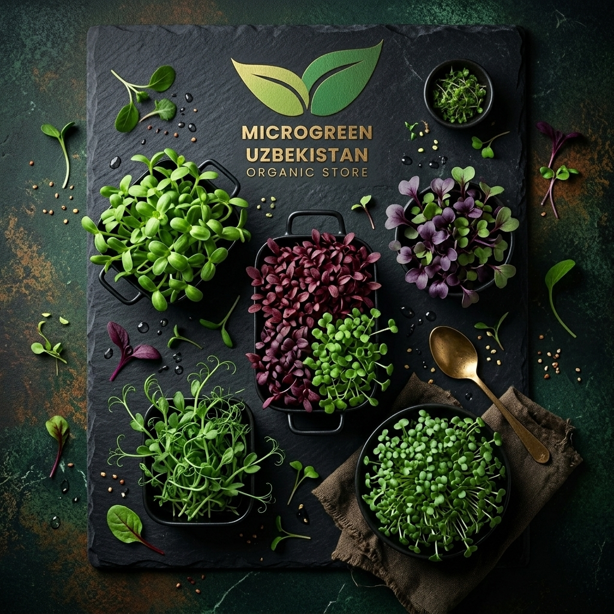
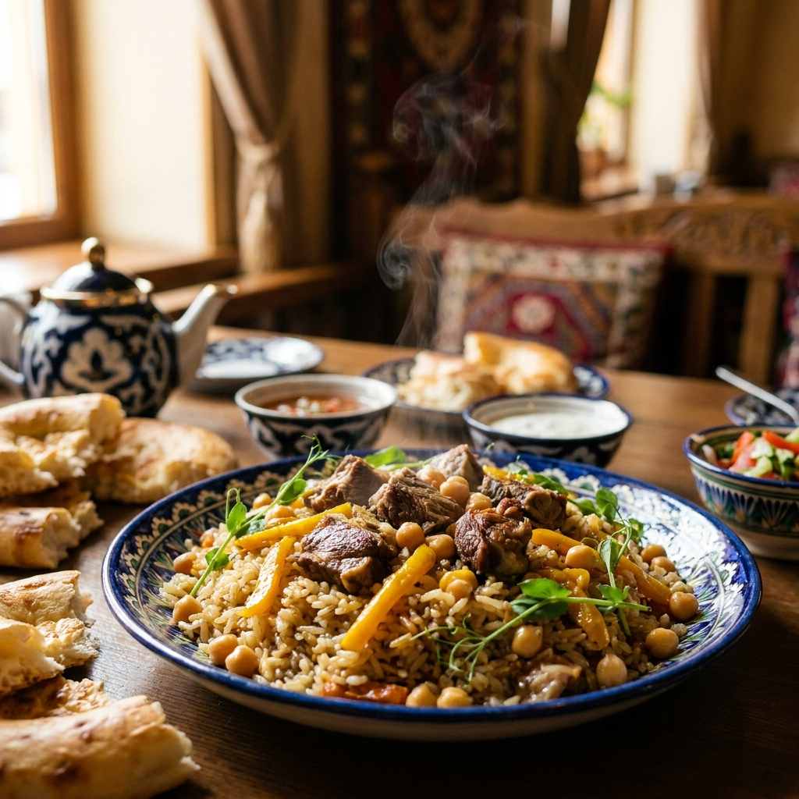
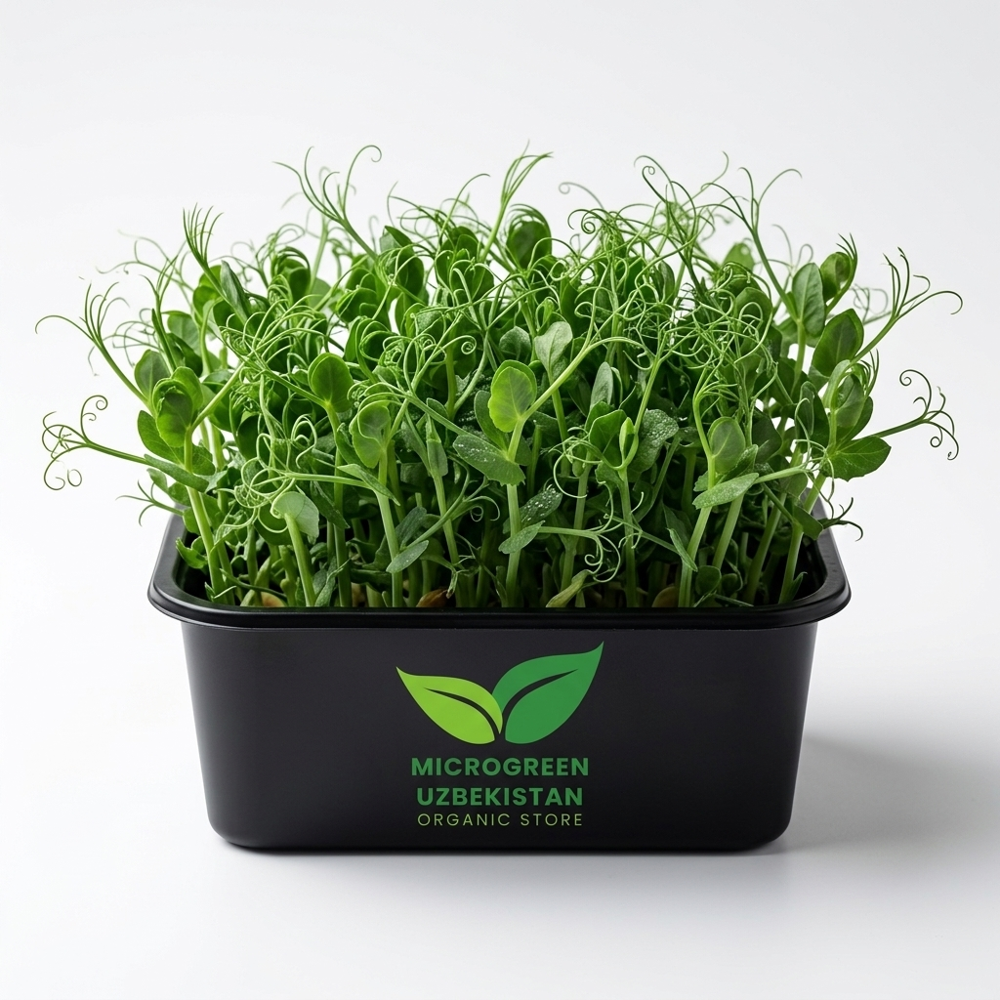
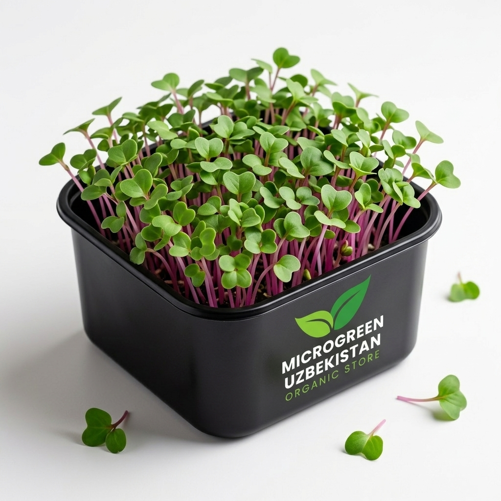
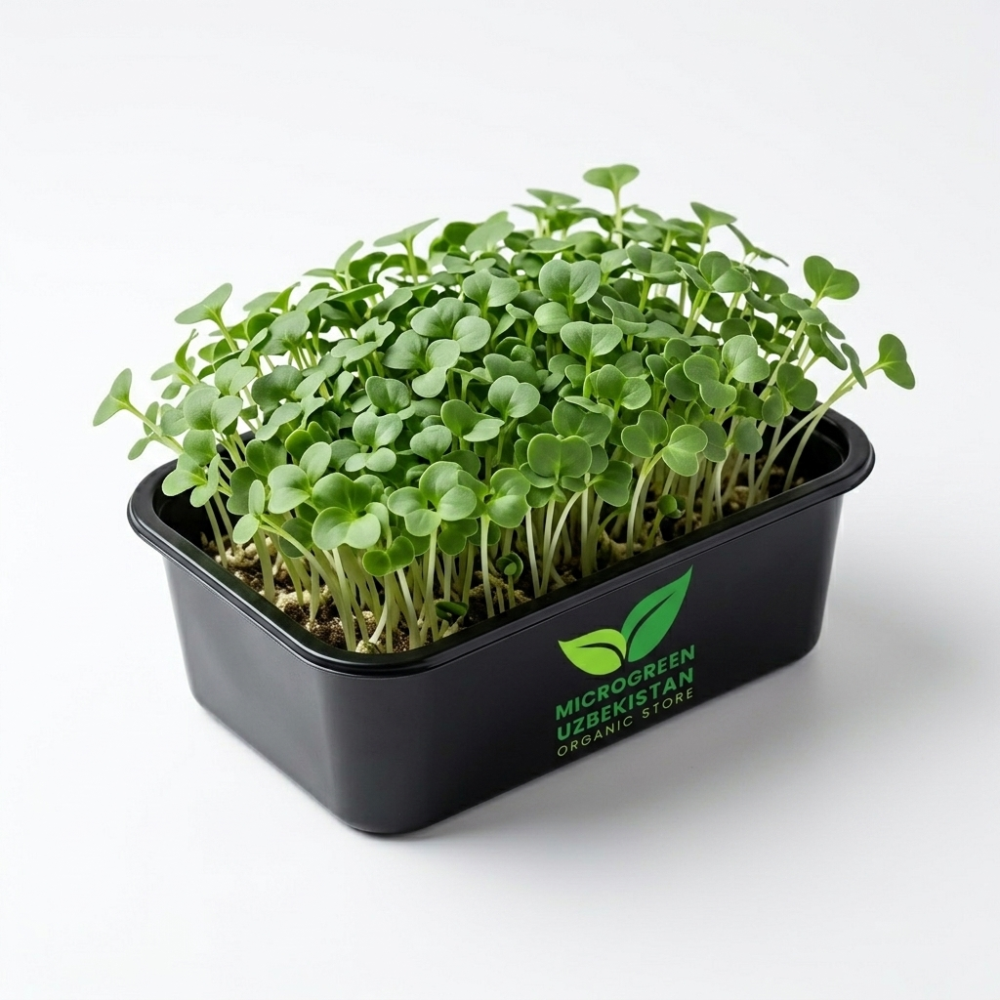
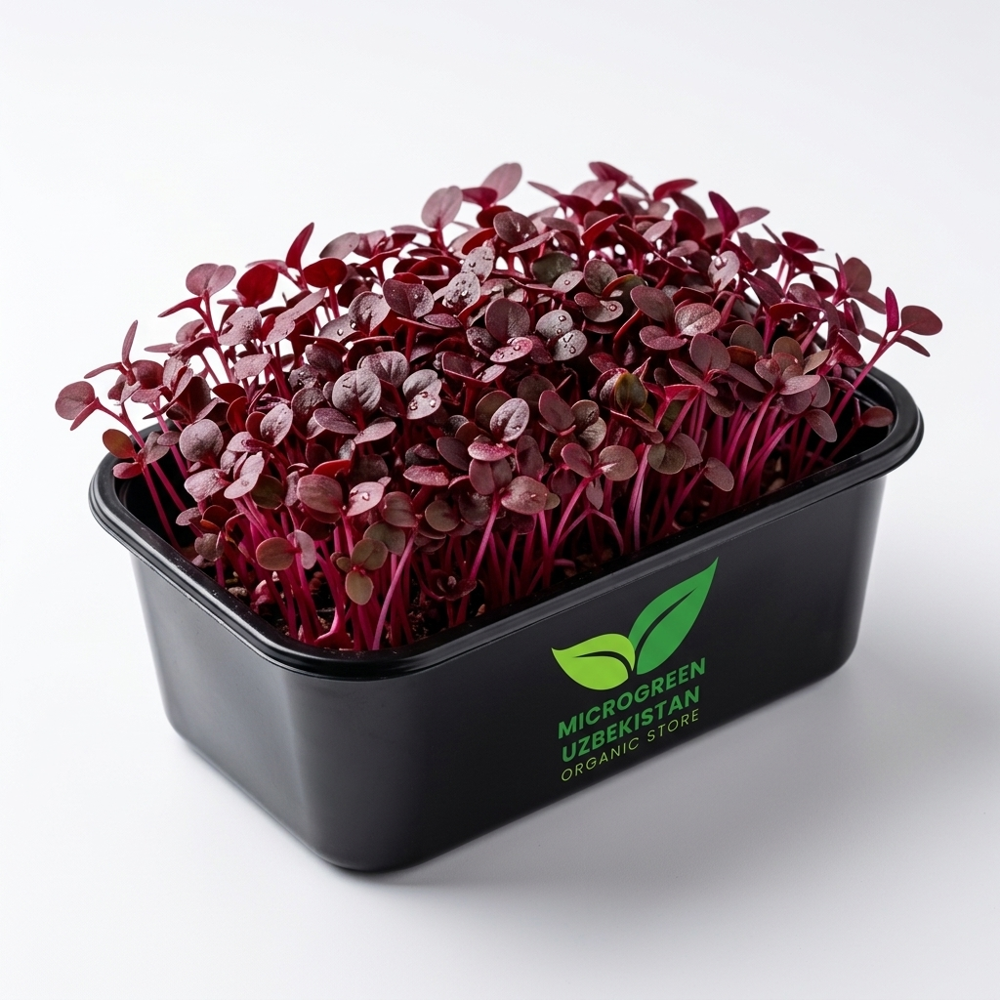
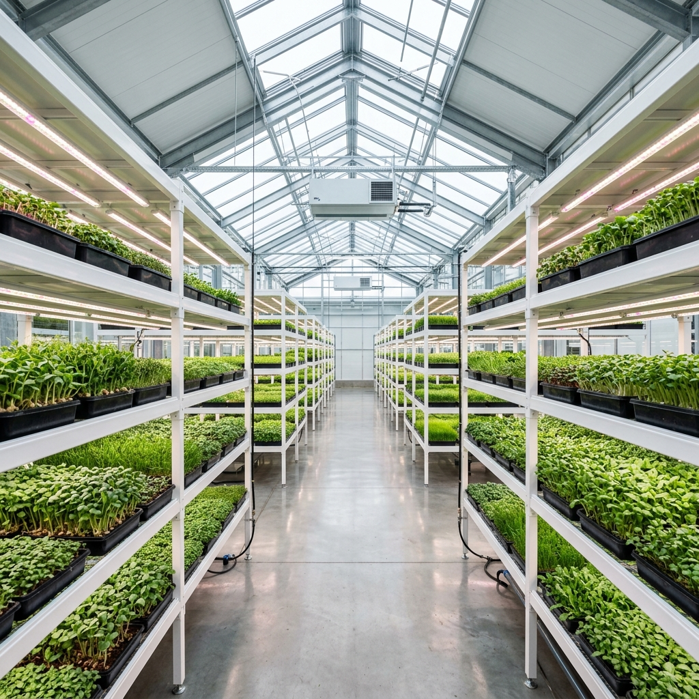
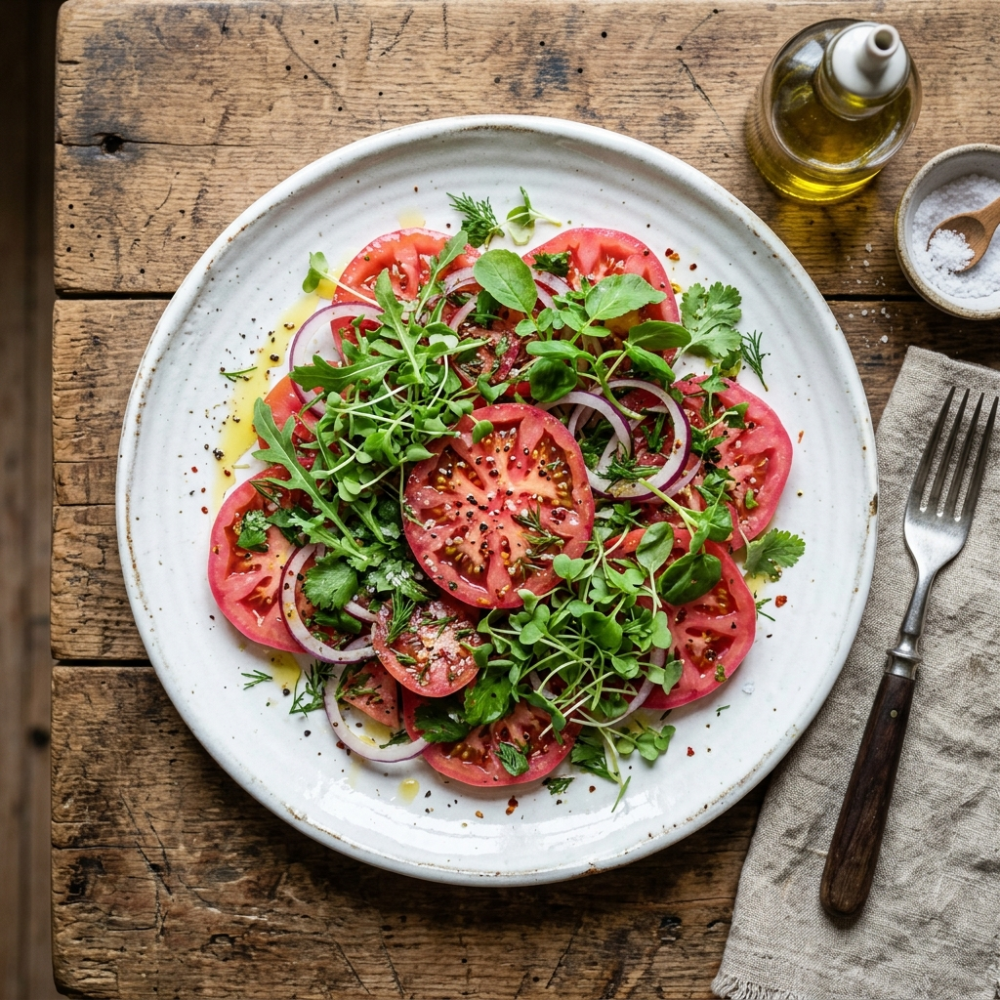

Palovni qanday yeyish — ovqat tartibi haqida son.
Сахар и порядок: выпуск о том, в какой последовательности мы едим.
Откуда берётся тяжесть после плова — и почему дело не только в порции
| Bosqich · Стадия | Nima bo'ladi · Что происходит | Nima sekinlashtiradi · Что замедляет |
|---|---|---|
| Oshqozon bo'shashiОпорожнение желудка | Ovqat o'n ikki barmoqli ichakka o'tadiХимус поступает в двенадцатиперстную кишку | Yopishqoq tola, yog', oqsil, kislotaВязкая клетчатка, жир, белок, кислота |
| Kraxmal parchalanishiРасщепление крахмала | Fermentlar kraxmalni oddiy qandga aylantiradiФерменты превращают крахмал в простой сахар | Polifenollar — ferment ingibitorlariПолифенолы — ингибиторы ферментов |
| So'rilishВсасывание | Ingichka ichak devori orqali qonga o'tishПереход в кровь через стенку тонкой кишки | Tola geli — jismoniy to'siqГель клетчатки как физический барьер |
| FoydalanishУтилизация | Mushaklar energiyani o'zlashtiradiМышцы забирают энергию | Inkretin javobi, jismoniy faollikИнкретиновый ответ, движение |
Одна и та же тарелка, другой порядок
Sxema tadqiqot natijalarini ko'rsatadi, aniq o'lchov emas · Схема иллюстрирует результат исследований, а не измерение конкретного человека
Manba · Источники: Shukla va boshq., 2015 · Kuwata va boshq., 2016 · Nutrients, 2023. Tadqiqotlar sabzavot haqida, muayyan mahsulot haqida emas · Исследования выполнены с овощами, а не с конкретным продуктом.
Сколько чайных ложек сахара в день допускает Всемирная организация здравоохранения
Manba · Источник: WHO Guideline: Sugars intake for adults and children.
Четыре шага и одна привычка. Ничего не нужно исключать из меню
Manba · Источник: ADA Standards of Care, 2026 — umumiy ovqatlanish tavsiyasi · общая рекомендация по питанию.

Palov o'z o'rnida qoladi — faqat undan oldin tarelka ko'kat paydo bo'ladi · Плов остаётся на месте — перед ним просто появляется тарелка зелени
Bepul usul · Бесплатный приёмВчерашний плов — приём, за который мы не берём денег
Manba · Источник: randomizatsiyalangan tadqiqot, sovutilgan guruch va rezistent kraxmal · рандомизированное исследование остывшего риса и резистентного крахмала.
Что внутри пачки — в граммах, а не в обещаниях
| Miks | kkal | Uglevod Углеводы |
Tola Клетчатка |
Oqsil Белок |
K vit. |
|---|---|---|---|---|---|
| YumshoqМягкий | 25 | 3,3 g | 2,0 g | 3,2 g | 103 mkg |
| PalovgaК плову | 32 | 3,8 g | 1,8 g | 2,9 g | 259 mkg |
| KrestsimonКрестоцветный | 32 | 4,8 g | 2,0 g | 2,9 g | 194 mkg |
| RangliЦветной | 24 | 3,6 g | 1,8 g | 2,5 g | 236 mkg |
Qiymatlar ekinlar ulushi bo'yicha hisoblangan, laboratoriya bayonnomasi emas · Значения рассчитаны по долям культур, это не лабораторный протокол




Rasmda — retseptning yetakchi ekini, qadoq emas · На снимке — ведущая культура рецептуры, не упаковка. Narx so'mda / цена в сумах за 100 г
Молекулы внутри листа: что о них известно и чего пока не известно
Ekstrakt bilan tadqiqotlar bor, ammo 2025-yilgi eng yirik ish asosiy maqsadga erishmagan.
Есть исследования на экстрактах, но самая крупная работа 2025 года не достигла первичной цели.
Qizil va binafsha rangni beradigan pigment. Hujayra va hayvon modellarida o'rganilgan.
Пигмент, дающий красный и фиолетовый цвет. Изучен на клетках и животных моделях.
Probirkada kraxmal parchalaydigan fermentlarga ta'sir qilishi ko'rsatilgan.
В пробирке показано влияние на ферменты, расщепляющие крахмал.
Miqdori 8-sahifada. Varfarin qabul qilayotganlar uchun doimiy miqdor muhim — shifokor bilan maslahatlashing.
Количество — на стр. 8. Тем, кто принимает варфарин, важна постоянная доза: обсудите с врачом.
Manba · Источники: Science Translational Medicine, 2017 · Nature Microbiology, 2025 · J Agric Food Chem · Food Chemistry, 2021 · Eur J Clin Nutr, 2015.
Почему мы не греем продукт и просим жевать тщательно

Ferma Samarqand yaqinida · Ферма под Самаркандом: от срезки до доставки — сутки
Салат перед пловом — три минуты, пока казан отдыхает

Kit «Avval yashil» · Кит «Сначала зелень»: микс 100 г и саше с заправкой
Mahsulot davolovchi yoki parhez ovqat emas. Har bir miksning tarkibi va oziqaviy qiymati qadoqda va tovar kartochkasida ko'rsatilgan.
Продукт не является лечебным или диетическим питанием. Состав и пищевую ценность каждого микса смотрите на упаковке и в карточке товара.
Материалы выпуска носят информационный характер и не заменяют консультацию врача.